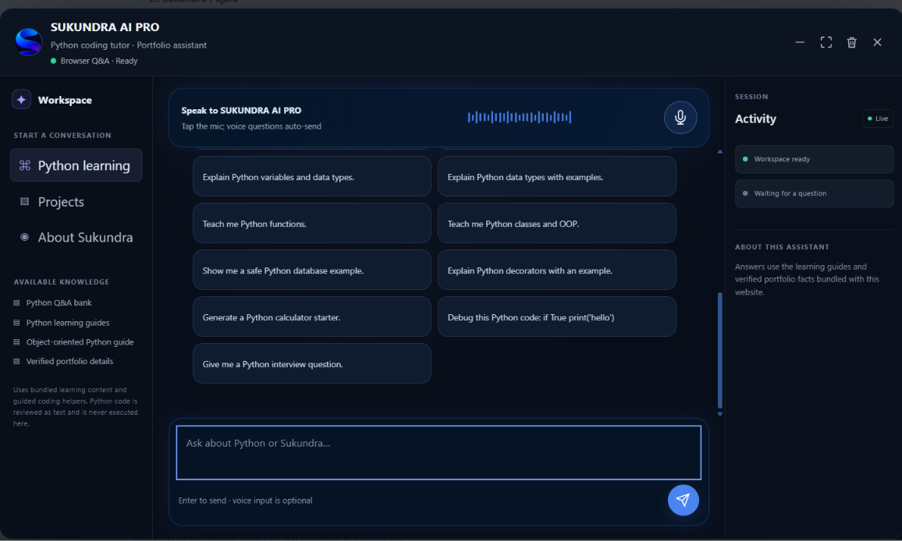

Learn step by step
Ask beginner-friendly Python questions by text or voice and get examples explained in clear, simple steps.
A browser-only Python coding tutor for learning concepts, reviewing snippets, and exploring guided project starters. Speak in Nepali or English and hear the answer in English, when browser voice support is available.
Text answers are English only · Voice questions can be in Nepali or English, with spoken English answers
name = "Ram"
greeting = f"Hello {name}"
print(greeting)Ask beginner-friendly Python questions by text or voice and get examples explained in clear, simple steps.
Get guided code starters, line-by-line explanations, and static checks for common issues.
Ask about my interests, learning journey, projects, and the skills I am developing.
I wanted one place where visitors could explore Python topics from my learning resources and ask about my portfolio. That idea became a browser-based assistant: part Python tutor, part guide to my work.

Python lessons, topic guides, and question-and-answer content are bundled with the site so the assistant can offer examples and guided explanations.
JavaScript matches questions to the bundled material and portfolio details. Voice input uses browser speech recognition; spoken replies use browser speech synthesis.
There is no remote AI model or Python execution behind the chat. Code checks are limited text-based hints, and voice support depends on the visitor's browser.
SUKUNDRA AI PRO uses bundled guides and browser-only JavaScript helpers; it does not call an AI model, execute submitted Python, or provide a secure code sandbox. Static checks are limited and cannot confirm that a program is correct. It accepts voice input in Nepali or English and speaks answers in English when browser voice support is available. Voice questions and answers are not shown or saved as chat text. Nepali speech recognition depends on browser/device support.